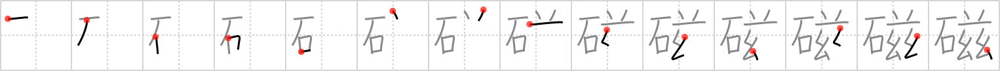

磁
← →
magnet

Reading:
On-Yomi: ジ
Heisig story:
Stone . . . double-mysterious.
Koohii stories:
1) [stehr] 9-10-2007(202): A magnet is a rock with two sides; one that mysteriously pushes and one that pulls; doubly mysterious. (see astridtops' story).
2) [arrogantape] 17-7-2012(49): STONE + BAND OF NIGGERS: Band of niggers throwing rocks. Now that's a police magnet.
3) [mullr] 20-1-2009(39): The gremlins have this mysterious rock the use to attract yet more gremlins.
4) [shaydwyrm] 22-6-2007(35): I found some stones on the siamese twins. Turns out the stones were magnetic, and they weren't siamese twins at all!
5) [astridtops] 16-7-2006(32): In the old days, people didn't know what magnets were. They just thought of them as stones that were double mysterious.